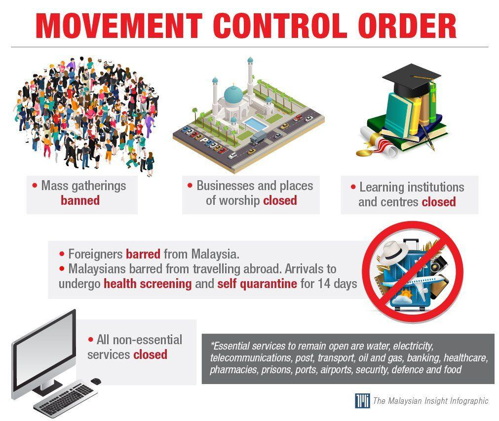
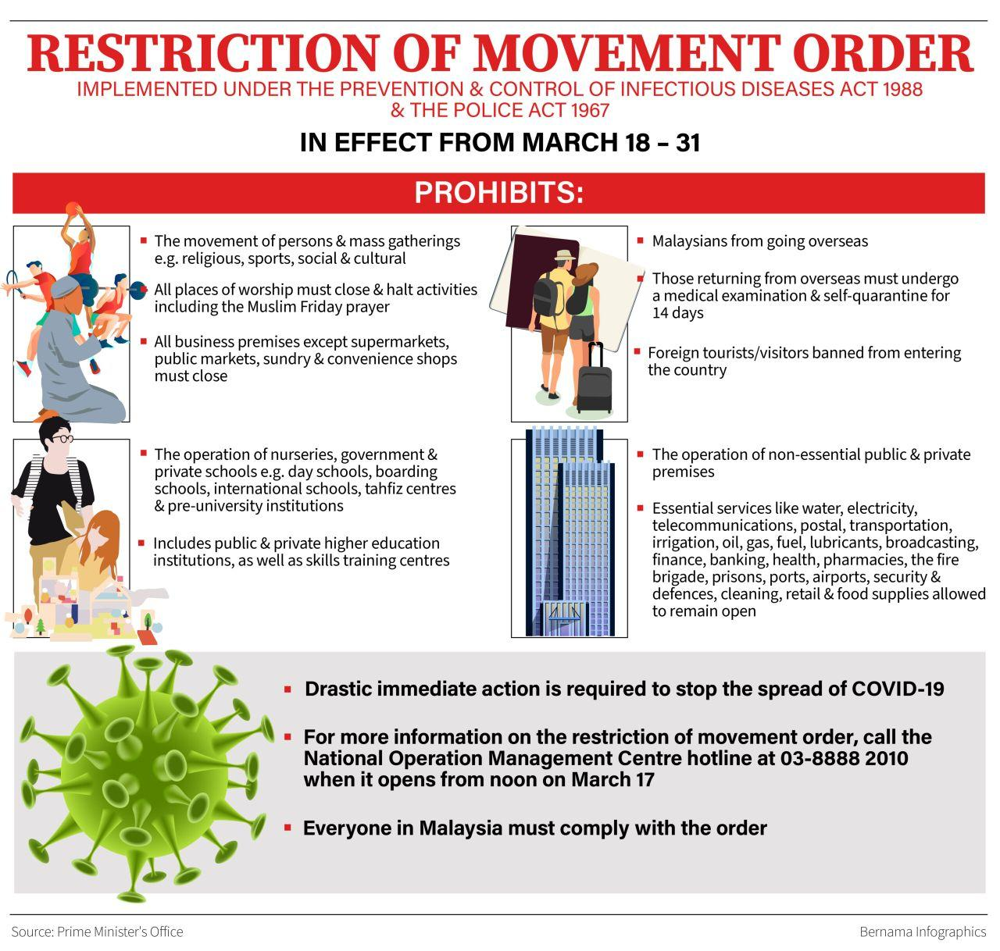
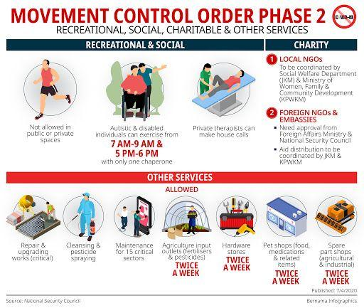

Before I write about my experience during this MCO, I will briefly explain what is MCO
and why we as Malaysian had to follow it.
So basically MCO is stand for Movement Control Order.
MCO is an initiative that the government took in order to stop the spreading of Covid-19 pandemic.
Its been a month since the first day of MCO on 18th March 2020.
The goverment has announced that MCO will be extend until 28 April 2020.
|  |  |  |
|---|
Been staying at home for almost a month had taught me about how it feel about freedom.
At first staying at home is things that i want to do at most of the time.
But, I miss my friends since this is the first time I go the days without talking face-to-face with them.
During the MCO I've been doing a lot of things that I dont do on normal day.
I've been an late night person since the start of MCO.
I've been delaying in finishing my assignment.
Here I write things I do during the MCO.